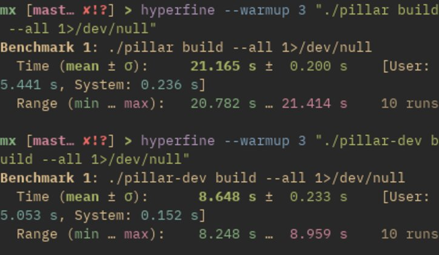

My Plans for This Site
It remains to be seen how this actually turns out, but my idea is that this will be a sort of news board on what I'm currently working on with this site specifically. I suppose we'll just see how it goes!
New Plugin 221122
I just wrote a quick script for my uxn zine page which replaces its tag with the contents of a file, and it works really well! In future versions I want to keep the flexibility a plugin system provides, but maybe with better support for passing arguments? I'm just having the script do some manual parsing of a string following the tag, which actually works fine. I just feel like it might be nice to have a common interface for passing data to scripts to keep it consistent in the future.
New parser benchmarks 311022
I've really been enjoying working on the new parser on and off for the past couple of weeks, and it's been a good opportunity to learn some parts of the rust tooling I hadn't used before! The main new thing I've been using is unit testing, which has been really useful as I quickly build out the parsing engine. Being able to quickly double-check changes I make against a standard has been great, and means that I've spent a lot less time checking debug print statements! I've also been continuously benchmarking the engine against really large test files (100 mb of sample text) to make sure I don't accidentally introduce changes which significantly increase the average runtime. It can currently parse and translate 100 mb in 2.802 s ± 0.047 s, which is good enough for me :>
Oh boy, here I go rewriting again! 051022
I guess every year or so I end up re-writing my site generator. Beyond it being an interesting exercise and fun project to work on, I've found that it's a useful framework for reflection on how I want to engage with my website. The current version served me well, but over time I've begun to find that it feels somewhat bulky and cumbersome. Pillar currently deals with the entire build process, and my current thinking for the rewrite is that it will only deal with parsing a (new!!) markup language into html through stdin and stdout. That way I'll have flexibility to tweak my build process, including scripts and preprocessing and whatever else I might want, but maintain the core stability of a custom parser.
More optimizations! 130422
After a lot help from the peeps on mastodon, I learned that the primary slowdown for pillar was actually all the python plugins I have! One design decision I made early on in pillar's dev was to offload one-off type parsing to external plugins. This is used to generate my rss feed, the orphans list on my home page, and a lot of other little things which I didn't think made sense to put into the pillar codebase. However, something I learned recently is that python takes a lot of time to start up, and because I was running every plugin on every page, that time was really adding up! In fact, some basic testing showed that if I removed all my plugins my site built in just 5 seconds!! As a first step to minimize this impact, I just rewrote the plugins section of pillar to only run the plugins necessary for each page. With that small optimization, average site build time dropped to 8.648 s ± 0.233 s :D
Long overdue pillar optimizations 060322
Wow I've written some bad code. Turns out the main reason pillar was so slow was because of a truly terrible string insertion function I wrote. It's so bad, actually, that I feel the need to show it off to warn others!
let insert_len = len(&ins.to_string());
let final_len = len(&s) + insert_len;
let mut r = String::with_capacity(final_len);
for i in 0..final_len {
if i < idx {
r.push_str(&slice(&s, i..i + 1));
} else if i < idx + insert_len {
let i_ins = i - idx;
r.push_str(&slice(&ins.to_string(), i_ins..i_ins + 1));
} else {
let a_ins = i - insert_len;
r.push_str(&slice(&s, a_ins..a_ins + 1));
}
}
it's... just awful. I think I must have been possesed by a malevolent code demon when I wrote this, or I at least hope I was! Anyway, with that fixed (the sane solution was 3 lines of code) my whole site builds in 26 seconds. Not great, not terrible, but much better and good enough for now :D
Updates to Pillar 220322
Work on optimizations continue, mostly focusing on string parsing. An additional page metadata variable was added, called "static", which if set to true tells pillar to always parse that page. On this site I use that for my home, plugin documentation, files, and music pages to keep them up-to-date.
Plugin additions and orphans 220322
Added a few more plugins, including "stats", which generates a list of orphaned pages by traversing links found from the index. With this information I resutructed a lot of pages, increasing interconnectivity and just making things feel a bit more cohesive. That included some new "grouping" pages, for my WFC writing, projects, and general thoughts. I also added the "doc-gen" plugin, which pulls comments from the rest of the plugins (only supporting python right now) and turns them into a readable (if a bit sparse) documentation page.
Move to RPi4 200221
Well that wasn't too hard! With the help of natehn's website I managed to move Mineral Existence over to my raspberry pi 4 from Github pages, which is pretty exciting. It's currently running on Caddy, which was super simple to set up, and if you're thinking about making the move to self hosting as well I cannot recommend natehn's post enough.
Pillar 010221
Work resumes...
Upcoming plans 090121
This is not exclusively about this site, but I want to move marble to its own library, change how I do in-line formatting, modify pillar to only update pages if changes have been made, organize my Norsk page, and add a connectivity visualizer. Here's hoping I can get that done before 2022! (This is sort of a reminder for myself)
Ideas about slight restructuring 261220
I've been thinking about this site, and what I want from it, and I think I might shift things around a bit. My internal debate around exactly what a "shift" would mean is based around two ideas for what personal sites can be: more wiki driven, with folders and smaller pages which are more vertically connected, or more "content" driven, so think blog posts. I've been sort of been sitting undecided between those two designs, with some pages (generally the earlier ones) leaning more toward the "blog post" side of things, and more recent ones leaning a bit more toward the wiki concept. I think I've decided one what I want which is to ... (drum roll please) ... purposefully sit between those two forms! While I've seen a lot of discussion on other personal sites about trying to get away from "content", often in the form of blog posts, and focus more on personal knowledge, I find that sometimes long-form articles are a good way for me to record my research, experience, mistakes, whatever. I also like to think that someone might find something helpful in here, and to that end I think that in-depth pages about a topic are often more effective at communicating knowledge than personal notes or short wiki pages. However, I don't want my site to *focus* on those more formal pages, merely offer them up for deeper explanations should the reader be looking for them or find them interesting. With that in mind, I think I want to slightly redesign my current home page, getting away from the list of recent updates to present a broader view of my site. I'm not quite sure what that will look like, but I'm leaning toward something graphical, maybe a map or diagram showing interconnected pages? I also sort of like the idea of hiding things away a bit more and relying on that interconnectedness to let people navigate my site, though the main four links I have in the header will definitely stay. Anyway, all just thoughts for now, so we'll see what I end up doing :>
Whoops, forgot about this page (and other news) 201220
Amid all the changes to the site I totally forgot about this page! As a brief recap, I've moved everything to a new site generator, Pillar, and with that have rewritten everything in my new Marble markup language. Marble is very similar to markdown, and if you want to know more about it you can check out the repo, which has some examples and explanation. I'll be writing a longer page about Pillar, but Pillar is a simple site generator with (light) template support and a few neat features written in basic Rust with "unicode-segmentation" as its only dependency. In terms of new pages, I've added a page about learning Norwegian and one with the music I've been listening to (which is auto generated by Pillar!).
Lots of css stuff 211120
Lot's of changes have been made recently, mostly to how the site looks. I added a dark/light mode button (with the eldritch help of css target selectors), fancy blockquote boxes, and lots of other little changes. I got tons of help and inspiration from Fred Bednarski and thomasorus' sites, and overall I like the new look.
SVG Troubles 281020
I've been messing around with getting contact links in the footer for a little while now, and I can't quite figure it out (my sr.ht svg is invisible). This isn't much of an update, as I'm still not sure how to fix it, but more of a heads up as to why the footer might be a little funky.
Variables, Metadata, and Restructuring 261020
While I currently have a pretty solid (if simple) site generator, it's missing a few tools and some extra customizability which I'd prefer it have. The main thing is that I currently have no way to store extra data about a file, like what sort of page it is, when it was last edited, what the title is, and so on. This is the most obvious problem, but is unfortunately not the most difficult. The main issue which I'm trying to solve right now is more of a design problem if anything, which is how I want to structure the building and rendering process of my site. Right now I just have a makefile which runs a rendering bash script which outputs html from markdown, plus a few extra substitutions of my own making (I'll probably write a full post on this process once I get the issue I'm talking about now nailed down). It works, but leaves little room for extra steps. While I could keep adding functionality to the render script (which I will do in a smaller capacity), larger substitutions such as a list of posts feel out of place in such a small script and would require a rewrite of how it works. This is due to my decision to leave the render script pretty dumb; it is given a single markdown file and outputs some edited html to be used by the makefile, and has no extra knowledge of the site as a whole.
My thinking as of right now is to have the makefile first run a script which generates a .meta file for file in the site, pulling variable from a header in each file. That script would also have the ability to return those values it collected. After the metadata is found (or updated), a second script would run to write those more complicated substitutions like post lists to the necessary .md files. Finally the render script would turn the markdown into html, and pass it back to the makefile for the completion of the build cycle. The idea of a lot of .meta files feels sort of gross though, so let me know if you have any suggestions.
Additionally, I think I might break from my bash-only system to include a bit of Rust, as I've been wanting to learn it for a while and I figure this won't be too challenging of an introduction to the language.
Anyway, let me know what you think, and maybe look out for another one of these updates soonish?